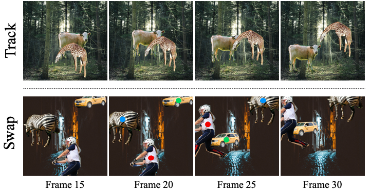

Abstract
In recent years, online Video Instance Segmentation (VIS) methods have shown remarkable advancement with their powerful query-based detectors. Utilizing the output queries of the detector at the frame-level, these methods achieve high accuracy on challenging benchmarks. However, our observations demonstrate that these methods heavily rely on location information, which often causes incorrect associations between objects.
This paper presents that a key axis of object matching in trackers is appearance information, which becomes greatly instructive under conditions where positional cues are insufficient for distinguishing their identities. Therefore, we suggest a simple yet powerful extension to object decoders that explicitly extract embeddings from backbone features and drive queries to capture the appearances of objects, which greatly enhances instance association accuracy. Furthermore, recognizing the limitations of existing benchmarks in fully evaluating appearance awareness, we have constructed a synthetic dataset to rigorously validate our method.
By effectively resolving the over-reliance on location information, we achieve state-of-the-art results on YouTube-VIS 2019/2021 and Occluded VIS (OVIS).
Overall Framework

Overview of VISAGE. (a) The proposed VISAGE’s architecture which generate object embedding and appearance embedding. (b) Overall inference pipeline of VISAGE: At time step t − 1, the memory bank is updated with both the appearance embedding and the object embedding. Then, at time step t, the memory embedding is read from the memory bank and used for matching. (c). Details of the matching process: In that scenario, using only object embeddings leads to incorrect matching. However, when guided by the appearance embedding, the matching process can be corrected.
Comparison with Previous Methods
Quantitative results on YouTube-VIS 2019, 2021 and OVIS validation sets. We compare our method with the state-of-the-art methods on the YouTube-VIS 2019, 2021 and OVIS validation sets. All expermients are conducted with the same backbone network (ResNet-50).

Qualitative results across challenging scenarios. Predicted results using previous methods and our appearance-guided methods. The first column illustrates a shot change across consecutive frames, a scenario where previous methods fail to maintain consistent tracking. The second and third columns demonstrate trajectory intersections, leading to id-switching with previous methods. The last column shows a synthetic scenario where the frame is flipped, causing previous methods to lose track of the object. Unlike previous methods, our method successfully tracks objects without switching or losses.
Analysis of Appearance-Guided Enhancement
Pseudo dataset. We generate a pseudo dataset to analyze the effect of appearance-guided enhancement. In track type videos, instances move along random bezier curves. On the other hand, the swap type refers to a scenario where the positions of each instance are exchanged in the middle of the video. The colored dot above each instance represents the corresponding instance in the swapped frame.
Comparison on pseudo dataset. We conduct experiments on the pseudo dataset to analyze the effect of appearance-guided enhancement. The results show that previous methods largely rely on location information, leading to incorrect matching in the swap type.
BibTeX
@article{kim2023visage,
title={VISAGE: Video Instance Segmentation with Appearance-Guided Enhancement},
author={Kim, Hanjung and Kang, Jaehyun and Heo, Miran and Hwang, Sukjun and Oh, Seoung Wug and Kim, Seon Joo},
journal={arXiv preprint arXiv:2312.04885},
year={2023}
}